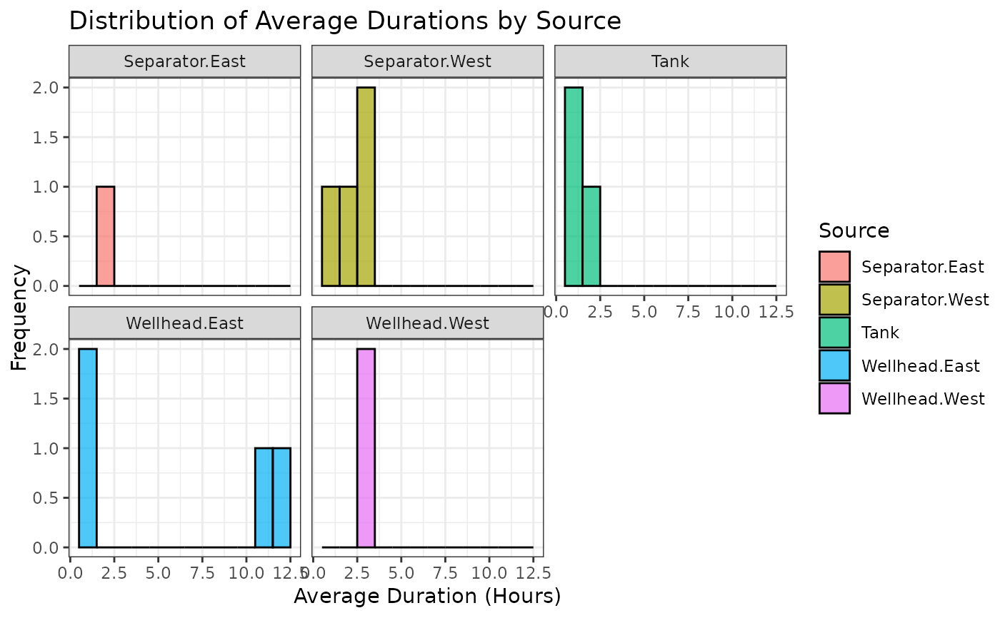

Estimate emission durations using continuous monitoring systems (CMS), accounting for CMS non-detect times
Source:R/estimate_durations.R
estimate_durations.RdEstimate emission durations using continuous monitoring systems (CMS), accounting for CMS non-detect times
Arguments
- data
List. Forward model output data. The format must match that of the sample (default) shortened data from the 2023 ADED controlled release experiment, which is released with the
durationpackage.- tz
Character. Time zone. Default set to
America/Denver.- directory
Character. Location where results output is saved. If not specified, a directory is created and the location is shared with the user.
- events
Logical. Print the number of events per year? Default set to
FALSE.- plot
Logical. Return a plot of the distribution of average duration estimates by source? Default set to
FALSE.- time
Logical. Return the timing of the simulation. Default set to
TRUE.
Value
Listed output of estimated durations by emission source. Saved in a newly created directory (Results Output).
Examples
estimate_durations(directory = "Desktop", plot = TRUE)
#>
#> ── Reading & cleaning data ─────────────────────────────────────────────────────
#> ✔ Complete
#>
#> ── Identifying naive events & creating localization + quantification estimates f
#> Performing quantification ■■■ 7% | Step: 1/14 | …
#> Performing quantification ■■■■■■■ 21% | Step: 3/14 | …
#> Performing quantification ■■■■■■■■■■ 29% | Step: 4/14 | …
#> Performing quantification ■■■■■■■■■■■■ 36% | Step: 5/14 | …
#> Performing quantification ■■■■■■■■■■■■■■ 43% | Step: 6/14 | …
#> Performing quantification ■■■■■■■■■■■■■■■■ 50% | Step: 7/14 | …
#> Performing quantification ■■■■■■■■■■■■■■■■■■ 57% | Step: 8/14 | …
#> Performing quantification ■■■■■■■■■■■■■■■■■■■■■■ 71% | Step: 10/14 |…
#> Performing quantification ■■■■■■■■■■■■■■■■■■■■■■■■■ 79% | Step: 11/14 |…
#> Performing quantification ■■■■■■■■■■■■■■■■■■■■■■■■■■■ 86% | Step: 12/14 |…
#> Performing quantification ■■■■■■■■■■■■■■■■■■■■■■■■■■■■■ 93% | Step: 13/14 |…
#> Performing quantification ■■■■■■■■■■■■■■■■■■■■■■■■■■■■■■■ 100% | Step: 14/14 |…
#> ✔ Complete
#>
#> ── Estimating durations ────────────────────────────────────────────────────────
#> ✔ Complete
#>
#> ── Estimating frequencies ──────────────────────────────────────────────────────
#> ✔ Complete
#>
#> ── Writing out results to working directory ────────────────────────────────────
#> ✔ Complete
#>
#> ── Timing ──────────────────────────────────────────────────────────────────────
#> ℹ The process took 1m 39.8s to run
#> → Results saved at: /home/runner/Desktop/Results Output/duration_estimates.rds
